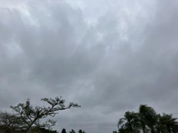
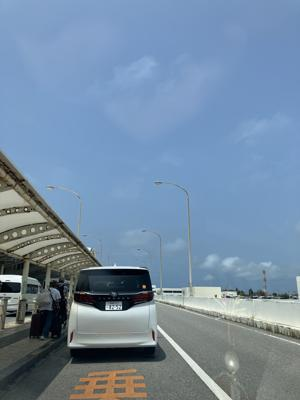
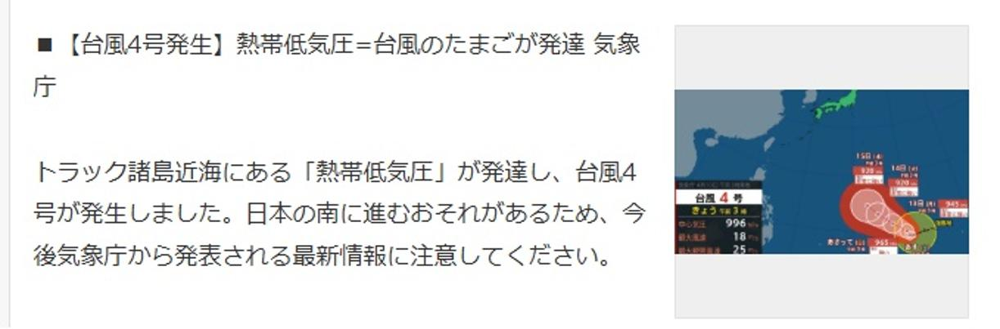

うるがいの話 ある日
最新: 他人のそら似【うるがいの話 ある日】とは 一日だけのプログです
『うるがいの話』の最新一日だけのプログで、通信料が少なく経済的だ。カニの画像をクリックすると全ての日付が載る『うるがいの話』サイトを表示します
|
|
【うるがいの話】 うるがい(ｳﾙｶﾞｲ urugai)とは、『もずくがに』の名前でとても大きくなります。 |
|---|---|
|
|
【カミマヤーの話】 猫のことを方言でマヤーといいます。カミマヤー（kamimayaa）とは、神の猫のことです。 |
|
【たながぁの音楽】 たながぁ（ﾀﾅｶﾞｰ tanagaa）とは手長えびのことで、何種類かあり大きいのは車 エビぐらいになります。 |

|
【ぶながぁの話】 ぶながぁ(ﾌﾞﾅｶﾞｰ bunagaa)とは、赤い髪の毛、赤い身体、そして身長は１ｍ２０ｃｍ ぐらい、川の蟹を食べているの目撃された。場所は沖縄県国頭郡大宜味村のと ある村僕の隣近所に住んでいる爺さんから、聞いた話です。 |
|
|
【ギーマの話】 ギーマ(giima)とは、山原の里山に咲くスズランに似た、 花を付けます。実は食べられます、 気が付くと口の周りが紫になっています。 |
2026年04月10日 (金）他人のそら似
17:27

『訪問介護は終わりましたから』と、お義母さんの妹を見舞い
に行ったヨメを駐車場で待つ私に、どこからで見たことのある
女の叔母さんが、声をかけた。さて、誰だったけ・・・・・。
お義母さんの妹は、寝たきりになり訪問看護を受けて、余命数
か月と医者に言われている。ひと月前から、介護のために沖縄
へ来た次女に加え、青森の長女が昨日から沖縄に来たという。
名前は聞いたことはあるが、長女とは面識がなかった。改めて
初対面の挨拶をする。それにしても、似ている。ヤンバルの親
戚の女性と、でもその人って４０年以上も前だし。イヤー似て
いる。なお長女はヨメより３歳下とこと（ちなみ美人です）。

マゴに会いに、コドモは内地に行く。今回から閉所恐怖症の薬
を、利用すると言っていた。

台風４号が発生した、いろいろ気になる。今日から、扇風機を
つける。